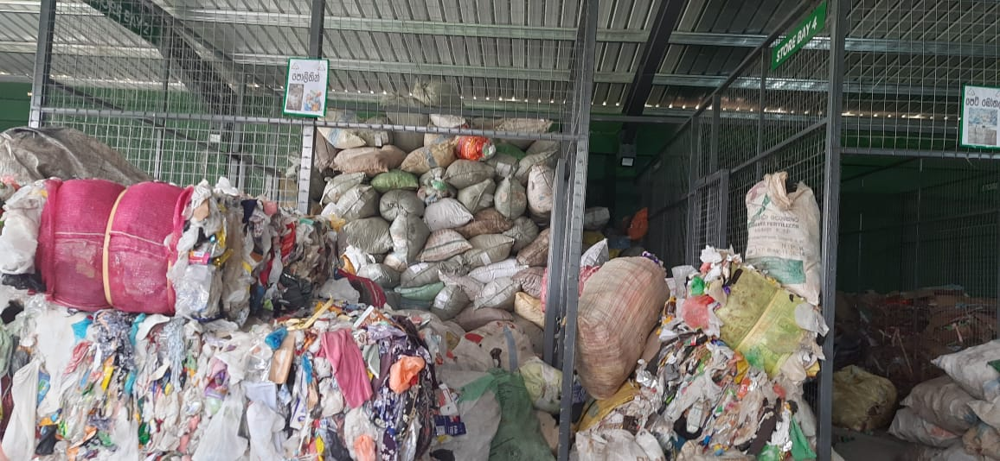
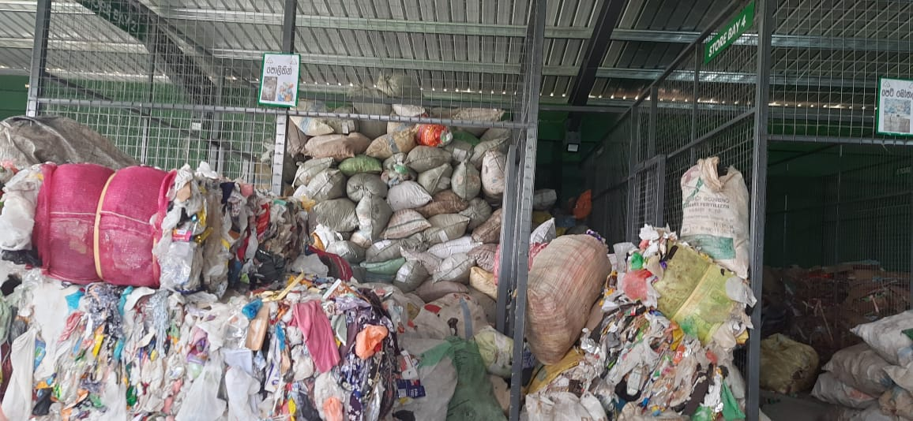

Proposed Solutions
1. Find & Plan Waste Drop-off
A community-driven tool designed to support the local Material Recovery Facility operated by the Homagama Pradeshiya Sabha.
 

Local Recovery Center in Action – Homagama Pradeshiya Sabha
- 📍 Locate your nearest drop-off center (currently Homagama MRF)
- ♻️ View accepted recyclables: plastic, polythene, paper, steel
- 📅 Check available drop-off times and suggested off-peak hours
- 💡 Learn tips for sorting and preparing waste properly
This tool encourages responsible disposal and reduces illegal dumping by helping Kottawa residents make informed recycling decisions.
🗺️ Waste Drop-off Assistant (Mockup)
📌 This is a mock feature to demonstrate how residents could plan drop-offs to the Homagama facility in the future.
2. Smart Bin System
Implementing smart sensor-equipped waste bins in key public locations across can transform how waste is collected. These bins detect when they are full and automatically notify the municipal waste management services. This helps reduce unsightly overflows, prevent illegal dumping, and optimize collection routes—especially during peak waste periods like weekends or after market days.
3. Public Recycling Awareness
Raising awareness is key to behavioral change. This initiative includes launching local recycling campaigns with posters, banners, and interactive community workshops. Collaborations with schools, temples, and youth clubs in Kottawa will help promote sorting practices, while community clean-up events and small reward programs (like discounts on municipal fees for recyclers) will further motivate residents to reduce and recycle more effectively.